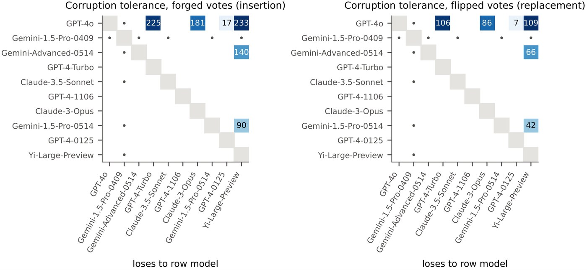

Certified Corruption Budgets: Anytime-Valid Leaderboard Claims under Adaptive Rigging
arXiv preprint arXiv:2610.10597, 2026

The problem
Because every standing on a public leaderboard is visible, an adversary can watch each claim as it is published and rig the votes behind it — forging ballots, withholding private variants, or contaminating the benchmark. A guarantee that assumes the data were collected before anyone looked does not survive that.
What we do
Each claim is published together with a certified corruption budget: a tolerance such that the claim is correct unless more records than that were corrupted. The certificate holds against attackers who see every certificate and are not themselves held to a budget.
What it buys you
A reader gets a number attached to each claim saying how much tampering it would take to overturn it — which is a far more useful thing to know about a public leaderboard than a p-value computed as if nobody were watching.
Cite
@article{khosravi2026certified,
title = {Certified Corruption Budgets: Anytime-Valid Leaderboard Claims under Adaptive Rigging},
author = {Khosravi, Hamed and Huo, Xiaoming},
journal = {arXiv preprint arXiv:2610.10597},
year = {2026}
}